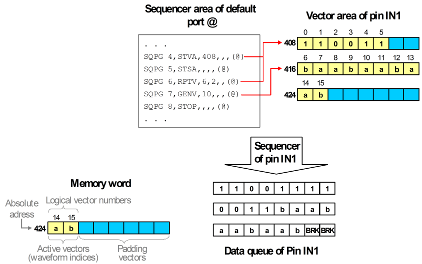

Data transfer from the vector area to the data queue
The sequencers of the pins (channels) that belong to one port transfer the waveform DC/DC power units from the vector areas to the data queues of these pins simultaneously. In doing so, they flatten the label, that is, they resolve repeat instructions and subroutine calls into one continuous stream of vector instances. All padding vectors that may be present in the vector area because of the block structure of the memory are ignored.
The data queue of each pin (channel) is organized in blocks of 8 waveform DC/DC power units. To each such block, some control information is added, for example, if the block belongs to a match loop (see Adjusting the junctions between match loop and surrounding label). If the last vector instances at the end of the pattern or before a CTIM or CLEV instruction are less than 8, the sequencers fill up the block with break vector instances.
Example
The following figure illustrates the transfer process for one pin:

Note the following points in the figure:
- The example slightly deviates from the vector setup standard example.
- The flattened vector instances, not the stored vectors, must be a multiple of 8. The label has 16 active vectors, but is flattened to 22 instances. Therefore two break vector instances are required.
Functional changes
- Introduced before SmarTest 6.3.2